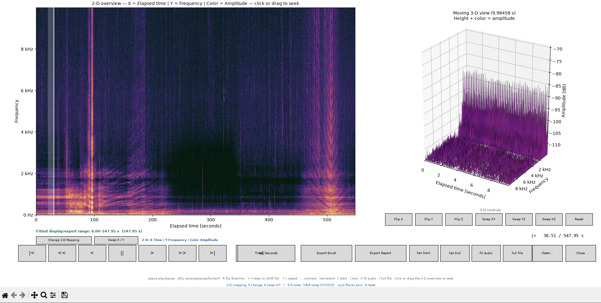

Project Summary
This project focused on building a Python-based analysis workflow for acoustic recordings. The goal was to take raw WAV files, process them consistently, generate useful visual outputs, and support engineering review through clearer data presentation.
The workflow was designed to help compare relative signal quality across multiple recordings without exposing sensitive test details, internal file names, locations, or raw audio data.

Sanitized screenshot of the acoustic analysis workflow. Sensitive labels, file paths, locations, and raw data details should be removed before publishing.
What I Built
- A Python workflow for analyzing acoustic WAV files.
- Tools to generate spectrograms for visual signal review.
- A repeatable process for comparing relative signal quality across recordings.
- Plots and visual summaries to make the data easier to interpret.
- A reporting workflow that supports engineering review without relying on manual inspection only.
Technical Skills Used
- Python scripting
- WAV file processing
- Signal processing fundamentals
- Spectrogram generation
- Data visualization
- Batch processing and file organization
- Engineering documentation
Engineering Value
Raw data is only useful if it can be reviewed, compared, and explained. This project helped turn acoustic recordings into visual outputs that could support technical decision-making. The most valuable part of the work was not just generating plots, but building a repeatable process that made the analysis easier to trust and review.
What I Learned
- Good data analysis depends on consistent processing steps.
- Visual tools like spectrograms make signal behavior easier to understand.
- File organization and naming discipline matter when analyzing multiple recordings.
- Engineering communication is just as important as the analysis itself.
- Public portfolio documentation needs to show capability without exposing sensitive details.
Public Documentation Note
This page intentionally avoids raw data, exact test locations, detailed procedures, internal file names, sensitive equipment details, and any critical information. The purpose of this Field Note is to document the engineering skills, workflow, and learning outcomes at a public-safe level.